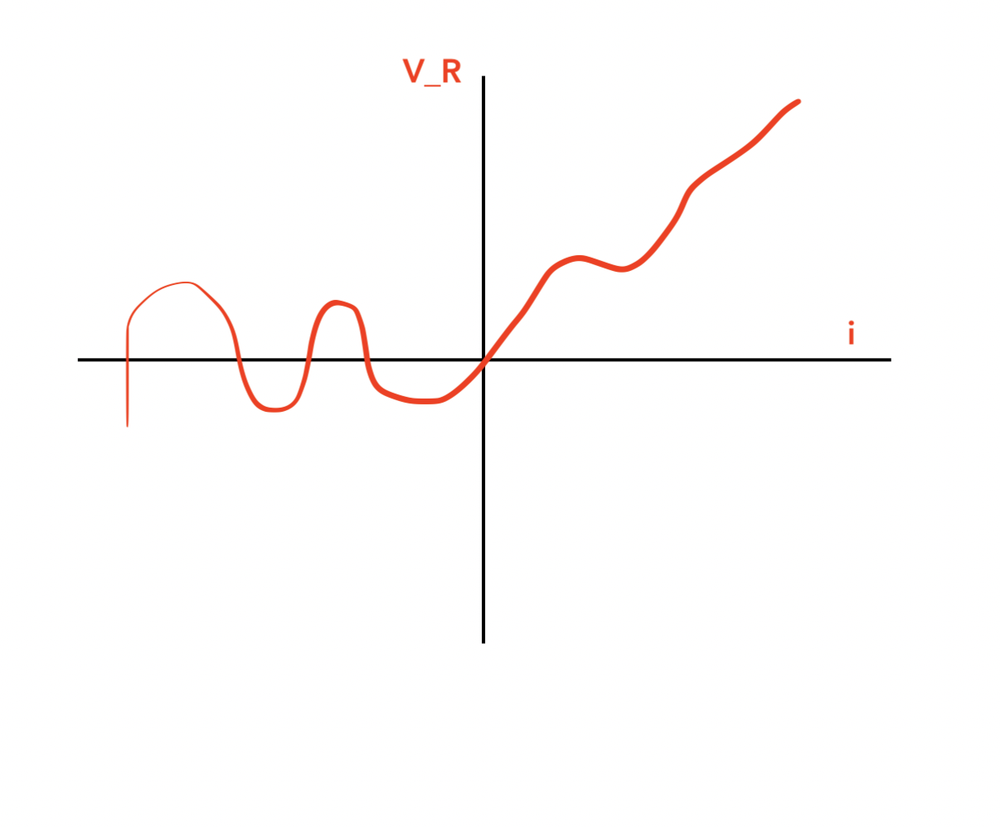
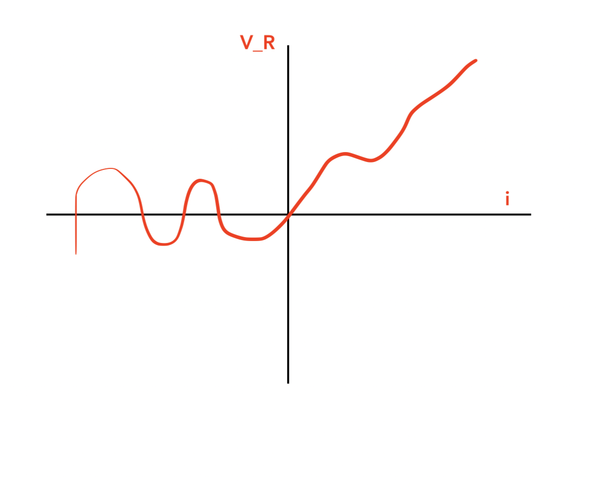
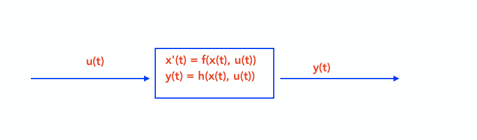
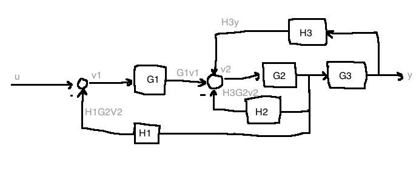

for control design, we need a “good” (simple but accurate) mathematical model of how the plant responds to stimuli
q(t) \in \mathbb{R} is the position of the mass M at the time t, output
M > 0, mass in kg
u - an externally applied force (input)
\dot{q} := \frac{dq}{dt}, \quad \ddot{q} := \frac{d^2q}{dt^2}
Assume that q=0 corresponds to the mass location at which the spring is neither stretched nor compressed - “unsprung”.
Newton’s 2nd law: M\ddot{q} = \sum{ \text{forces acting on } M}
Force due to spring: F_K(q) = Kq(t), assumed to be linear, hooke’s law
Force due to damper, possibly nonlinear: C(\dot{q}) where C: \mathbb{R} \rightarrow \mathbb{R}
Altogether, we get a second order nonlinear ODE: M\ddot{q} = u(t) - Kq(t) - C(\dot{q})
Note: if the damper is linear (C(\dot{q})=bq), then the overall system is linear
Applying Newton’s second law on M_1 gives us two coupled second order linear ODEs: M_1\ddot{q_1} = u - Kq_1 + Kq_2 - b\dot{q}_1 + b\dot{q}_2 M_2\ddot{q_2} = Kq_1 - Kq_2 + b\dot{q}_1 - b\dot{q}_2
 

V_R(t) = h(i(t)), \quad h : \mathbb{R} \rightarrow \mathbb{R} is possibly nonlinear
u(t): applied voltage; y(t): voltage across capacitor
Apply Kirchoff’s Voltage Law: \begin{aligned} -u(t) + V_R(t) + y(t) &= 0\\ \\ i(t) &= C\frac{dy}{dt} \quad \text{(capacitor equation)}\\ V_R &= h(i(t)) = h(C\dot(y))\\ \\ -u(t) + h(C\dot{y}) + y &= 0\\ \end{aligned}
Note: if the resister were linear (h(i) = Ri), the whole system would be linear (see 2.3.4 in notes)
L02 Summary
- control design cycle (course roadmap)
- Ch2 modelling
- examples - mech x2, elec x1
Expectation: model very simple, physical systems, see sec 2.3 of notes
a way to express mathematical models in standard form

Newton’s second law: M\ddot{y} = u - D(\dot{y})
We put this model into a standard form by defining two state variables: x_1 := y \text{ (position)}, \quad x_2 := \dot{y} \text{ (velocity)}
Together, x_1 and x_2 make up the state of the system. We do some rewriting to have a systematic way to do linearization:
\begin{aligned} \dot{x_1} &= x_2 & \text{(state equation)}\\ \dot{x_2} &= \frac{1}{M}u - \frac{1}{M}D(x_2) & \text{(state equation)}\\ y &= x_1 & \text{(output equation)}\\ \end{aligned}
Together, these equations make up the state-space model. These equations have the general form (also called the Nonlinear state-space model):
\dot{x} = f(x,u) \text{, } y = h(x(t))
In this example:
\begin{aligned} x(t) &= \begin{bmatrix} x_1(t) \\ x_2(t)\\ \end{bmatrix} \in \mathbb{R}^2\\ f(x,u) &= \begin{bmatrix} x_2 \\ \frac{1}{M}u - \frac{1}{M}D(x_2) \end{bmatrix}\\ \end{aligned}\\ h(x) = x_1
In the special case where air resistance is a linear function of x_2 (D(x_2)=d x_2), then f(x,u) becomes a linear function of x and u:
f(x,u) = \begin{bmatrix} 0 & 1 \\ 0 & \frac{-d}{M} \end{bmatrix} \begin{bmatrix} x_1 \\ x_2 \end{bmatrix} + \begin{bmatrix} 0 \\ \frac{1}{M} \end{bmatrix} u
Define C = \begin{bmatrix}1 & 0\end{bmatrix}. In the linear case, we get: \begin{aligned} \dot{x} &= Ax + Bu\\ y &= Cx\\ \end{aligned}
This is a linear, time-invariant (LTI) model.
Expect at least one question like this on the midterm
Generalizing this example above, a large class of systems have models of the form:
\begin{aligned} \dot{x} &= f(x, u), & f: \mathbb{R}^n \times \mathbb{R}^m \rightarrow \mathbb{R}^n\\ y &= h(x, u), & h: \mathbb{R}^n \times \mathbb{R}^m \rightarrow \mathbb{R}^p\\ \end{aligned}
The LTI special case is: \begin{aligned} \dot{x} &= Ax + Bu, & A \in \mathbb{R}^{n \times n}, B \in \mathbb{R}^{n \times m}\\ y &= Cx + Du, & C \in \mathbb{R}^{p \times n}, D \in \mathbb{R}^{p \times m}\\ \end{aligned}
In this course, we look at single-input, single-output systems: m=p=1.
\begin{aligned} m&=2, & u &= (u_1, u_2)\\ p&=2, & y &= (y_1, y_2)\\ m&=4, & x &= (x_1, x_2, x_3, x_4) := (y_1, \dot{y_1}, y_2, \dot{y_2})\\ \end{aligned}
 \begin{aligned}
m&= 4\\u &= (y_1, u_2, u_3, u_4)= (f_1, f_2, f_3, f_4)\\
p&=3\\
y&=(y_1, y_2, y_3)\\
n &= 12\\
x &\in \mathbb{R}^{12} = (\text{position}, \text{3 orientations - roll, pitch, and yaw}, \text{velocity}, \text{angular velocity})\\
\end{aligned}
\begin{aligned}
m&= 4\\u &= (y_1, u_2, u_3, u_4)= (f_1, f_2, f_3, f_4)\\
p&=3\\
y&=(y_1, y_2, y_3)\\
n &= 12\\
x &\in \mathbb{R}^{12} = (\text{position}, \text{3 orientations - roll, pitch, and yaw}, \text{velocity}, \text{angular velocity})\\
\end{aligned}
What is the state of a system?
The state vector x(t_0) encapsulates all of the system’s evolution up to time t_0.
More formally: For any two times t_0 \lt t, knowing x(t_0) and knowing \{u(t) : t_0 \le t \le t_1\}, we can compute x(t_1) and hence y(t_1).
Faraz:System is causal

We know M\ddot{y} = 0 from Newton’s laws.
If we try a 1-dimensional state, say x := y, then knowing x(t_0) without knowing \dot{y} is not enough information to find the position in the future, x(t) for t \gt t_0. We have the same problem if we define x = \dot{y}.
Since the governing equation is second order, we need two initial conditions. So, x=(y, \dot{y}) \in \mathbb{r}^2 is a good choice.
In general, it is a good idea to use:
Model: \ddot{\theta} = \frac{3}{Ml^2} u - 3\frac{g}{l} \sin(\theta)
\begin{aligned} x &= \begin{bmatrix} x_1 \\ x_2 \end{bmatrix} := \begin{bmatrix} \theta \\ \dot{\theta} \end{bmatrix}\\ u &:= \tau \text{ (applied torque)}\\ y &:= \theta \text{ (position)} \end{aligned}
In state space form: \begin{aligned} x &= (\theta, \dot{\theta})\\ y &= \text{angular position} = \theta\\ \\ \dot{x}&=f(x,u) \quad & & \dot{x_1}=x_2\\ \dot{y}&=h(x,u) \quad & & \dot{x_2}=\frac{3}{Ml^2}u - 3\frac{s}{l} \sin(x_1)\\ & & & y = x_1 \end{aligned}
This is nonlinear due to the sine term, its state-space model cannot be written in the form as above

\begin{aligned} x &= \begin{bmatrix} x_1 \\ x_2 \end{bmatrix} := \begin{bmatrix} \text{voltage across cap} \\ \text{current through inductor} \end{bmatrix}\\ u &:= \text{ (applied voltage)}\\ y &:= \text{current through inductor} \end{aligned}
\begin{aligned} x_1 &:= \text{voltage across capacitor} = \frac{1}{C} \int{y(\tau)d\tau}\\ x_2 &:= \text{current through inductor} = y\\ \\ -u + V_R + V_C + V_L &= 0\\ \Rightarrow -u + Rx_2 + x_1 + L\dot{x_2} &= 0, \quad \text{from capacitor equation: } \dot{x_1}=\frac{1}{C} x_2\\ \\ \dot{x} &= \begin{bmatrix} 0 & \frac{1}{C}\\ \frac{-1}{2} & \frac{-R}{L}\end{bmatrix} \begin{bmatrix}x_1\\ x_2\end{bmatrix} + \begin{bmatrix}0 \\ \frac{1}{L}\end{bmatrix} u\\ y &= \begin{bmatrix}0 & 1\end{bmatrix}\\ \end{aligned}
The above is a linear system, and right above this is the state space model
L03 summary

Non-linear time-invariant causal state-space model \begin{aligned} f&: \mathbb{R}^n \times \mathbb{R}^m \to \mathbb{R}^n\\ h&: \mathbb{R}^n \times \mathbb{R}^m \to \mathbb{R}^p \end{aligned} Single-input single output: m = p = 1
State vector: z(t), given x(t_0) and u(t), t_0 \leq t \leq t_1, we can compute y(t_1)
Rule of thumb: 1. mechanical - posn and velocity 2. electrical: Inductor currents and capacitor voltages
LTI SPECIAL CASE
A \epsilon \mathbb{R}^{n\times n};B \epsilon \mathbb{R}^{n\times m};C \epsilon \mathbb{R}^{p\times n};D \epsilon \mathbb{R}^{p\times n};
In this course we always linearize, non-linear system
This refers to the process of approximating a nonlinear state-space model with a linear model
Linearization allows us to use simpler, systematic analysis and design tools
Linearize y=x^3 at the point \bar{x}=1.
Let \bar{y} := f(\bar{x}) = 1^3 = 1
Taylor series at x=\bar{x} is: y=\sum_{n=0}^\infty c_n (x-\bar{x})^n, \quad c_n = \frac{1}{n!} \frac{d^n f(x)}{dx^n} \biggr|_{x=\bar{x}}
Keep only the terms n=0 and n=1: \begin{aligned} f(x) &\approx f(\bar{x}) + \frac{df(x)}{dx}\biggr|_{x-\bar{x}} (x-\bar{x})\\ y - \bar{y} &\approx + \frac{df(x)}{dx}\biggr|_{x-\bar{x}} (x-\bar{x})\\ \end{aligned}
If we define the derivations \partial y := y - \bar{y}, \partial x := x - \bar{x}, then \partial y = \frac{df}{dx} \bigg|_{x=\bar{x}} \partial x, i.e. \partial y = 3 \partial x
y = \begin{bmatrix}y_1 \\ y_2\end{bmatrix} = f(x) = \begin{bmatrix}x_1 x_2 - 1 \\ x_3^2 - 2x_1 x_3\end{bmatrix} =: \begin{bmatrix}f_1(x) \\ f_2(x)\end{bmatrix}
Linearize at \bar{x}=(1, -1, 2).
\bar{y}=f(\bar{x})=\begin{bmatrix}-2\\0\end{bmatrix}
d(x)=f(\bar{x})+\frac{\partial f}{\partial x} \biggr|_{x=\bar{x}} (x-\bar{x}) \text{ + higher order terms}
The Jacobian of f at \bar{x} is: \begin{aligned} \frac{\partial f}{\partial x} \biggr|_{x = \bar{x}} &= \begin{bmatrix} \frac{\partial f_1}{\partial x_1} & \frac{\partial f_1}{\partial x_2} & \frac{\partial f_1}{\partial x_3} \\ \frac{\partial f_2}{\partial x_1} & \frac{\partial f_2}{\partial x_2} & \frac{\partial f_2}{\partial x_3} \\ \frac{\partial f_3}{\partial x_1} & \frac{\partial f_3}{\partial x_2} & \frac{\partial f_3}{\partial x_3} \\ \end{bmatrix}\\ &= \begin{bmatrix} x_2 & x_1 & 0 \\ -2x_3 & 0 & 2x_3-2x_1 \\ \end{bmatrix}_{x=(1, -1, 2)}\\ &= \begin{bmatrix} -1 & 1 & 0\\ -4 & 0 & 2 \end{bmatrix}\\ &= A \end{aligned}
i.e. y-\bar{y} \approx A(x-\bar{x})
You can now think of this as tangent planes to surfaces
By direect extension, at (x,u)=(\bar{x}, \bar{u}): f(x, u) \approx f(\bar{x}, \bar{u})+ \frac{\partial f}{\partial x} \biggr|_{(x,u)=(\bar{x}, \bar{u})} (x-\bar{x}) + \frac{\partial f}{\partial u} \biggr|_{(x,u)=(\bar{x}, \bar{u})} (u-\bar{u})
Let’s apply linearization to \dot{x}=f(x,u), y=h(x,u).
Definition (2.5.1): A constant pair (\bar{x}, \bar{u}) \in \mathbb{R}^n \times \mathbb{R}^m is an equilibrium configuration of the system \dot{x}=f(x,u), y=h(x,u) if f(\bar{x}, \bar{u})=(0,...,0). The constant \bar{x} is the equilibrium point.
\begin{aligned} \dot{x} &= f(x,u)\\ y &= h(x,u)\\ x_1 &= \theta\\ x_2 &= \dot{\theta}\\ f(x,u) &= \begin{bmatrix}x_2\\ \frac{3}{Ml}u-\frac{3g}{l}\sin(x_1)\end{bmatrix}\\ h(x) &= x_1 \end{aligned}
If y=\pi (upright), then \bar{x_1}=\pi. So we have to solve: \begin{bmatrix}0\\0\end{bmatrix} = \begin{bmatrix} \bar{x_2}\\ \frac{3\bar{u}}{Ml} - \frac{3g}{l}\sin(\bar{x_1}) \end{bmatrix} \Rightarrow \bar{x_2}=0, \quad \bar{u}=0
Therefore the equilibria are: \begin{bmatrix}\bar{x_1}\\\bar{x_2}\end{bmatrix} = \begin{bmatrix}\pi + 2\pi k \\ 0\end{bmatrix}, \quad \bar{u}=0
Assume that \dot{x}=f(x,u) has an equilibrium configuration at (x,u)=(\bar{x}, \bar{u}).
f(x,u) \approx \underbrace{f(\bar{x}, \bar{u})}_{=0} + \underbrace{\frac{\partial f}{\partial x} \biggr|_{(x,u)=(\bar{x}, \bar{u})} (x - \bar{x})}_{=: A} + \underbrace{\frac{\partial f}{\partial u} \biggr|_{(x,u)=(\bar{x}, \bar{u})} (u - \bar{u})}_{=:B}
Consider deviations from (\bar{x}, \bar{u}), where ||\partial x||, ||\partial u|| are assumed to be small: \begin{aligned} \partial x(t) &:= x(t) - \bar{x}\\ \partial u(t) &:= u(t) - \bar{u}\\ \end{aligned}
Then we get linearized state equations: \dot{\partial x} = \dot{x} - 0 = f(x,u) \approx A\partial x + B \partial u\\ \dot{\partial x} = A\partial x + B\partial u
Linearized output equation:
\partial y = \underbrace{\frac{\partial h}{\partial x} \biggr|_{(x,u)=(\bar{x},\bar{u})} \partial x}_{=:C} + \underbrace{\frac{\partial h}{\partial u} \biggr|_{(x,u)=(\bar{x},\bar{u})} \partial u}_{=:D}\\ \partial y := y-\bar{y}=y-h(\bar{x},\bar{u})
ss|tf\begin{aligned} \partial \dot{x} &= \begin{bmatrix} 0 & 1 \\ \frac{3g}{2l} & 0 \end{bmatrix} \partial x + \begin{bmatrix}0 \\ \frac{3}{Ml^2}\end{bmatrix} \partial u\\ \partial y &= \begin{bmatrix}1 & 0\end{bmatrix} \partial x\\ \\ G(s) &= C(sI-A)^{-1}B + D, \quad (sI-A)^{-1} = \frac{\text{adj}(sI-A)}{\det(sI-A)}\\ &= \begin{bmatrix}1 & 0\end{bmatrix}\begin{bmatrix}s & -1 \\ \frac{-3g}{2l} & s\end{bmatrix}^{-1}\begin{bmatrix}0 \\ \frac{3}{Ml^2}\end{bmatrix}\\ &= \frac{\begin{bmatrix}1 & 0\end{bmatrix}\begin{bmatrix}s & \frac{3g}{2l} \\ 1 & s\end{bmatrix}^T\begin{bmatrix}0 \\ \frac{3}{Ml^2}\end{bmatrix}}{s^2 - 1.5\frac{g}{l}}\\ &= \frac{3}{(Ml^2)(s^2 - \frac{1.5g}{l})}\\ \end{aligned}
+------+
U(s) -->| G(s) |--> Y(s) Y(s) = G(s)U(s)
+------+
+------+
+->| G(s) |--+
| +------+ |
U(s) -+ +--> Y(s) Y(s) = (G(s) + H(s))U(s)
| +------+ |
+->| H(s) |--+
+------+
D(s)
|
v
+-----+
D(s) | 1/G |
| +-----+
+------+ v | +------+
U(s) -->| G(s) |--o--> Y(s) = U(s) --o-->| G(s) | Y(s) = D(s) + G(s)U(s)
+------+ +------+
+------+
U(s) --o-->| G(s) |--+--> Y(s) Y(s) = G(s)U(s)/(1 + G(s)H(s))
^- +------+ |
| |
| +------+ |
+---| H(s) |--+
+------+
Find the transfer function from U to Y
\begin{aligned} Y(s) &= G_2(s) (G_{ff}(s) U(s) + G_1(s) (U(s) - Y(s)))\\ \frac{Y(s)}{U(s)} = \frac{G_2G_{ff} + G_2G_1}{1 + G_2G_1} \end{aligned}

Y(s) = (G_{ff} + G_1)(\frac{G_2}{1 + GG_2})
e.g. 
\begin{aligned} y&=G_3G_2v_2\\ v_2 &= H_2y+G_1v_1-H_2G_2v_1\\ v_1&=u-H_1G_2v_2\\ \\ \begin{bmatrix}1 & H_1 G_2 & 0 \\ -G_1 & 1+H_2G_2 & -H_3 \\ 0 & -G_3G_2 & 1\end{bmatrix} \begin{bmatrix}v_1 \\ v_2 \\ y\end{bmatrix} &= \begin{bmatrix}u \\ 0 \\ 0\end{bmatrix}\\ \\ \text{By cramer's rule:}\\ Y(s) &- \frac{ \det\begin{bmatrix}1 & H_1G_2 & u \\ -G_1 & 1+H_2G_2 & 0 \\ 0 & -G_2G_3 & 0\end{bmatrix} }{ \det\begin{bmatrix}1 & H_1G_2 & 0 \\ -G_1 & 1+H_2G_2 & -H_3 \\ 0 & -G_3G_2 & 1\end{bmatrix} }\\ &= \frac{G_1 G_2 G_3}{1 + H_1 H_2 G_2 - H_3 G_3 G_2 + G_1 H_1 G_2} U(s)\\ \end{aligned}